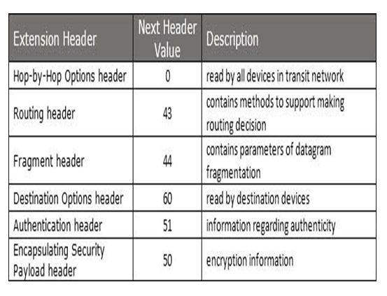

IPV6
- An IPv6 address is made of 128 bits divided into eight 16-bits blocks. Each block is then converted into 4-digit Hexadecimal numbers separated by colon symbols.
- For example, given below is a 128 bit IPv6 address represented in binary format and divided into eight 16-bits blocks:
- 0010000000000001 0000000000000000 0011001000111000 1101111111100001 0000000001100011 0000000000000000 0000000000000000 1111111011111011
- Each block is then converted into Hexadecimal and separated by ‘:’ symbol:
- 2001:0000:3238:DFE1:0063:0000:0000:FEFB
- Rule.1: Discard leading Zero(es):
- In Block 5, 0063, the leading two 0s can be omitted, such as (5th block):
- 2001:0000:3238:DFE1:63:0000:0000:FEFB
- Rule.2: If two of more blocks contain consecutive zeroes, omit them all and replace with double colon sign ::, such as (6th and 7th block):
- 2001:0000:3238:DFE1:63::FEFB
IPV6 HEADER

- Version(4bit):it represent the version of internet protocol,i.e. 0110.
- Traffic class(8bit): These 8 bits are divided into two parts.
- the most significant 6bits are used for Type of service to lrt the Roputer known what service should be provided to this packet
- the list significant 2bits are explicit congestion (ENC)
- Flow Label(20bits):this label is used to maintain the sequential flow of the packet belonging to a communication.this field helps avoid re-ordering the data packets.
it is designed for streaminf/real-time media
- Payload Length(16bits):ld is used to tell the router how much information a particular packet contain in its payload.
payload is composed of Extension header and upper Layer data.with 16 bits,up to 65535 nytes can be indicated ;but if the Extension Header contain Hop-by-Hop Extension Header,then the
payload may exceed 65535 bytes and this field is set to 0.
- Next Header(8bits):this field is used to indicate either the type of Extension Header,or if the the Extension Headre is not present the
it indicate the upper Layer PDU. the value for the type of upper Layer PDU are same as IPV4's.
- Hop Limit(8bits):tis field is used to stop packet to loop in the network infinitely.this is same as TTL inIPV4.
the value of Hop
Limit field is decremented by 1 as it passes a link(router/hop).
when the field reaches 0 the packet is discarded.
- Source Adderss(128 bits):this field indicates the address of originator of the packet.
- Destination Address(128bits):this field provides the address of intended recepient of the packet.
